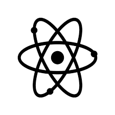

A Química é a ciência que estuda a composição, estrutura, propriedades da matéria, as mudanças sofridas por
ela durante as reações químicas e a sua relação com a energia.
O desenvolvimento desta ciência teve como base as observações de experimentos, sendo portanto, considerada uma ciência experimental.
Tradicionalmente, os princípios da química se iniciam com o estudo das partículas elementares, átomos, moléculas, substâncias e outros agregados da matéria. Matéria é tudo aquilo que ocupa espaço e possui massa de repouso (ou massa invariante). É um termo geral para a substância da qual todos os objetos físicos consistem. Tipicamente, a matéria inclui átomos e outras partículas que possuem massa. A massa é dita por alguns como sendo a quantidade de matéria em um objeto e volume é a quantidade de espaço ocupado por um objeto, mas esta definição confunde massa com matéria, que não são a mesma coisa. Diferentes campos usam o termo de maneiras diferentes e algumas vezes incompatíveis; não há um único significado científico que seja consenso para a palavra "matéria", apesar do termo "massa" ser bem definido. A matéria pode ser encontrada principalmente nos estados sólido, líquido e gasoso, em forma isolada ou em combinação. Reações químicas e outras transformações como as mudanças de fase envolvem o rearranjo de ligações químicas e outras interações entre as moléculas. Estas transformações envolvem invariavelmente diversos conceitos importantes como energia, equilíbrio químico entre outros. A seguir serão explanados as principais entidades usadas para descrever a matéria bem como alguns conceitos que permeiam as transformações sofridas pela matéria.
O átomo é a unidade básica de matéria que consiste de um núcleo denso central rodeado por uma nuvem de elétrons de carga negativa. O núcleo atômico contem prótons carregados positivamente e nêutrons eletricamente neutros (exceto o hidrogênio-1, que é o nuclídeo estável sem nêutrons). Os elétrons de um átomo interagem com o núcleo por força eletromagnética, e do mesmo modo, um grupo de átomos permanecem ligados uns aos outros por ligações químicas baseadas nesta mesma força, formando uma molécula. Um átomo que contém o mesmo número de prótons e elétrons é eletricamente neutro, caso contrário é carregado positivamente ou negativamente e é chamado de íon. Um átomo é classificado de acordo com o número de prótons e nêutrons no seu núcleo: o número de prótons determina o elemento químico e o número de nêutrons determina o isótopo do elemento. O modelo atualmente aceito para explicar a estrutura atômica é o modelo da mecânica quântica
Elemento químico é o termo coletivo para todos os tipos de átomos com o mesmo número atômico. Assim, todos os átomos de um elemento químico possuem necessariamente o mesmo número de prótons no núcleo. Um elemento é identificado por um símbolo, uma abreviatura que é na maioria dos casos derivada do nome em latim do elementoOs elementos estão dispostos na tabela periódica em ordem crecente do número atômico. Um total de 118 elementos são conhecidos até esta data (2013).
Um composto químico é uma substância química pura composta por dois ou mais elementos químicos diferentes.Os compostos químicos têm uma estrutura química única e definida e consistem em uma razão fixa de átomos, que são mantidos juntos num arranjo espacial definido por ligações químicas. Os átomos de um composto químico podem ser unidos por ligações covalentes, ligações iônicas, ligações metálicas ou por ligações covalentes coordenadas.Os elementos químicos não são considerados compostos químicos, mesmo que consistam em moléculas que contenham múltiplos átomos de um único elemento (como H2, S8, etc), sendo estas chamadas moléculas diatômicas ou moléculas poliatômicas.
Uma substância química é um tipo de matéria com composição e conjunto de propriedades definidos.Estritamente falando, uma mistura de compostos, elementos e compostos ou elementos não é uma substância química, mas pode ser chamado de produto químico. A maioria das substâncias que encontramos em nossa vida diária são misturas, como por exemplo o ar e a biomassa.
Uma molécula é uma entidade eletricamente neutra formada de dois ou mais átomos unidos por ligações covalentes.As moléculas são distinguidas dos íons pela ausência de carga elétrica. Uma molécula pode ser constituída por átomos de um único elemento químico, tal como com o oxigênio gasoso (O2), ou de diferentes elementos, como acontece com a água (H2O).
O íon é uma partícula eletricamente carregada, ou seja, é um átomo ou uma molécula que perdeu ou ganhou elétrons. Um íon é chamado cátion quando perde um ou mais elétrons, que são negativos, ficando carregado positivamente (por exemplo, o cátion sódio: Na+). Por outro lado, os ânions são os íons carregados negativamente, ou seja, ganharam eletróns (por exemplo, ânion cloreto: Cl-).
Assista agora a um pequeno vídeo que explica um pouco sobre reação química: